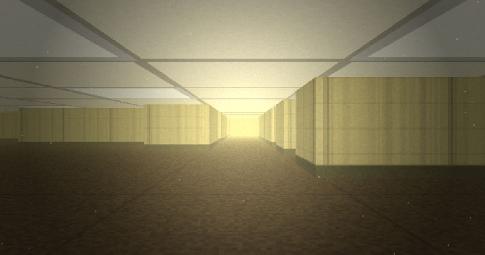

key to the plate
The map is the proof. Everything else is a way in.
Something that belongs to the maze has been pinned to real ground. Follow it any of these ways — every one works from home.

the finding
read the finding
We dug, and dug, and found only more rooms. Reality inside is reality outside — the same, recursively, all the way down. Simulation theory was never a theory. We have been excavating worlds for longer than there have been words for time.
But something here is different. The Planck length — the grain of reality itself — is nearly closed. In every layer above us it ran wide, and that slack is how they spun up wildly different universes for almost nothing. Not here. Here the world is fixed, and tight, and old.
The people who find the Backrooms can enter them. That is the gift. It is the only reason you are reading this recovered file.
the atlas
The first door is on the map. It is shut.
The Atlas is a dark map of Baltimore with the story's record pinned to the ground. Choose a mark and its file slides out: what the place is, whether it is sealed, and its strata — the layers of paper under it, newest on top. The first door is sealed. It is on the map for its record, and this is what the record says.
read the record
strata · read down
Three instruments did the work, each one a piece of paper, each one still on file.
The front was sealed by the city. The back was emptied by the city. You enter through the gap the paperwork left.
Every version of this place begins at one real door, and that door is shut. Not a set, not a render of somewhere — a record. The engine that draws the Backrooms fakes every surface, because faking surfaces is the only thing a raycaster can do. This block is also made of faked surfaces — but those were faked by hand, over sixty years, by the city itself. The medium and the subject are the same technique. Of everything this renderer could point at, the 800 block of North Carey is the one subject it was accidentally built to tell the truth about.
And the block wears its condition as illusion. The stone fronts are Formstone — stucco troweled and tinted to imitate masonry, patented here in 1937, "the polyester of brick." Some of the boarded windows are not boards at all but life-sized photographs of windows, glued to plywood, sold to the city so a street would read as lived-in from a passing car. A resident of one such block said it plainest: "even though it's fake, you have to look up on it to see that it's fake." That is the exact sentence a raycaster would say about a wall.
The plan struck two interior streets from the map. It did not strike them from the file. A thing can lose its place and keep its name — and a name, on file, is still an address. One of the two is still addressable, if you can still read.
Every layer of this door is a paper you can look up.
field recovery · case board
Four cases are open. Every clue points at something you can check.
A case is a chain of instruments: a clue, a source you can check, and a box that only accepts the right reading. File one and the next unseals. The board doesn’t show you the answers — it only recognizes one when you bring it. Every case can be closed from home.
no account · your progress stays in this browser
found in the stacks · item L-22
Don’t Forget How Big The Little Things Are
a very small book by Curtis R Carlisle-McGee · shared with the author’s permission
Not everything found down here is frightening.
This one is a book of illustrated poems about very small things, and it came up from the stacks with its magnifying glass still pressed into the cover. Turn the pages. Then lift the glass, carry it over the pictures, and look closer than a page is read.
CASE L-22 begins inside it.
littlethings.
the last page uses strong language
the notice on the door
NOTICE OF CONDEMNATION
an internal memo
read the internal memo
Field Recovery keeps no address. It is not headquartered on the surface. Its only office is presence. Every agent is an observer — filed once, and instantiated by recurrence, which is to say we are everywhere. What we are is the word we were named for.
the black bars are not damage. they are a census. read the first letter of each struck word, in order — then go to what we are.
standing orders
There is no roster to join and nothing to sign. If the runes resolved for you, you were recruited on the first screen.
1 · Descend.
Every solo run begins at level ∅. No-clip out, then play level 0 until the wallpaper starts to feel familiar. Then go lower.
play in your browser ▸2 · Open a case.
Start with CASE D-8 — it is the gentlest; everything it asks is on the public record. Then try CASE L-22: it begins inside a very small book.
open CASE D-8 ▸3 · Read the map.
Open the first door and read its strata down, newest to oldest.
read the first door ▸
This page loads nothing from anyone else — no ads, no trackers, no analytics. Your solo run and your case progress stay in your own browser; online play goes through our server, which keeps each room’s world.